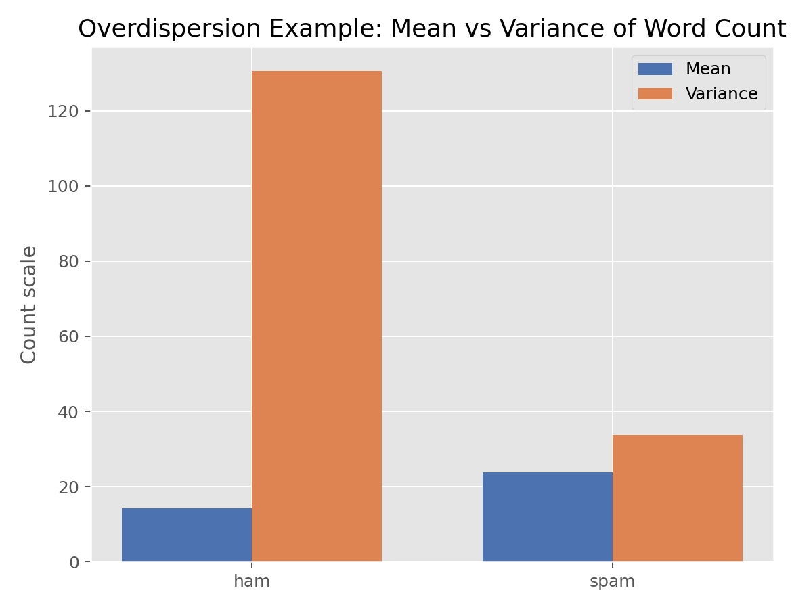

Quasi-Likelihood与过度离散
Quasi-Likelihood与过度离散（Quasi-Likelihood and Overdispersion）
方法概览
1.1 一句话本质
拟似然不承诺结局的完整分布，只规定「均值-方差关系」：它用一个离散因子 $\phi$ 把标准误按实际观测到的分散程度放大，从而在过度离散时得到诚实的推断，而系数点估计不变。
1.2 定义
拟似然（quasi-likelihood）方法在 GLM 框架下，只设定均值结构与「方差=$\phi\cdot V(\mu)$」，用估计出的离散因子 $\phi$ 修正标准误。quasi-Poisson、quasi-binomial 是其常见形式，专门应对过度离散。
1.3 它主要解决什么问题
- 研究问题：计数/比例结局过度离散时，如何在不承诺具体分布的前提下得到可靠的标准误与 p 值？
- 适用任务：过度离散计数（quasi-Poisson）、过度离散比例（quasi-binomial）的稳健推断。
- 常见医学场景：过度离散的发病计数、分组二元数据的比例过度离散、不想选具体分布时的稳健修正。
1.4 直觉与类比
Poisson 假设「方差正好等于均值」，一旦实际数据更散，它给出的标准误就像用一把「偏小的尺子」量误差，处处显得比真实更精确。拟似然的做法很实用：先量出「数据实际比模型预期散了多少倍」（这就是 $\phi$），再把所有标准误统一放大 $\sqrt{\phi}$ 倍。它不追问「数据到底服从什么分布」，只做最小必要的修正。
核心思想与原理
2.1 它到底在解决什么根本困难
过度离散会让 Poisson/二项模型低估标准误、夸大显著性。负二项能解决，但要承诺一个具体分布（Gamma-Poisson 混合）。根本困难是：能不能在不指定完整分布、只依赖均值-方差假设的情况下，就把推断修正得稳健？
2.2 关键洞察
参数估计其实只需要「均值结构正确」——不需要完整似然。Wedderburn 的拟似然把这一点形式化：只要设定 $E[Y]=\mu$ 和 $\mathrm{Var}(Y)=\phi\,V(\mu)$，得分方程就与普通 GLM 相同，故系数点估计不变；而所有标准误都含一个公共因子 $\sqrt{\phi}$。用 Pearson $\chi^2$/自由度 估出 $\phi$，把标准误乘上 $\sqrt{\phi}$ 即完成修正。$\phi=1$ 即无过度离散、退回普通 GLM。
2.3 与朴素/相邻做法的对比
- 相对 Poisson/二项：拟似然放大 SE、修正过度自信。
- 相对负二项：拟似然方差 $\phi\mu$（线性、无完整似然，故不能用 AIC）；负二项方差 $\mu+\alpha\mu^2$（二次、完整似然，可 AIC）。两者对「过度离散随均值如何增长」的假设不同。
- 相对稳健（三明治）标准误：思路相近（都不承诺完整分布），三明治 SE 用经验方差更一般，拟似然用参数化的方差函数。
数学形式
3.1 核心公式
$$ \mathrm{Var}(Y_i)=\phi\,V(\mu_i),\qquad \hat{\phi}=\frac{1}{n-p}\sum_i\frac{(y_i-\hat{\mu}_i)^2}{V(\hat{\mu}_i)} $$
对 quasi-Poisson $V(\mu)=\mu$，对 quasi-binomial $V(\mu)=\mu(1-\mu)$。这个式子在说：方差是「基准方差函数」乘以一个离散因子 $\phi$；$\phi$ 用 Pearson 残差平方和除以自由度来估。
3.2 推导脉络
- 拟得分函数只依赖均值与方差函数，形式同 GLM 的估计方程，故 $\hat{\boldsymbol{\beta}}$ 与对应 GLM 相同。
- 由于 $\mathrm{Var}(Y)=\phi V(\mu)$，系数协方差矩阵整体乘以 $\phi$，即 $\mathrm{SE}_{\text{quasi}}=\sqrt{\phi}\cdot\mathrm{SE}_{\text{GLM}}$。
- $\phi$ 用 Pearson $\chi^2/(n-p)$ 估计（$n-p$ 为残差自由度）。
- 检验从 z/卡方改用 t/F（因 $\phi$ 是估计的），更保守。
3.3 参数与统计量含义
- $\phi$（离散因子）：$\gt1$ 过度离散、$=1$ 无、$\lt1$ 欠离散。
- $V(\mu)$：方差函数（泊松 $\mu$、二项 $\mu(1-\mu)$）。
- $\hat{\boldsymbol{\beta}}$：与对应 GLM 相同（点估计不变）。
- 放大后的 SE / t 检验：修正后的推断。
3.4 关键假设（含违反后果）
| 假设 | 含义 | 违反后会怎样 | 如何粗查 |
|---|---|---|---|
| 均值结构正确 | log/logit 尺度线性 | 点估计有偏 | 残差图 |
| 方差正比于 V(μ) | 过度离散是常数倍 | φ 修正不充分 | 均值-方差图 |
| 独立 | 观测独立 | 需改用聚类稳健 SE | 看设计 |
手把手算例
一个 Poisson 模型有 $n-p=15$ 的残差自由度，算得 Pearson $\chi^2=45$。
一步步计算：
- 离散因子：$\hat{\phi}=\dfrac{\text{Pearson }\chi^2}{n-p}=\dfrac{45}{15}=3.0$。因 $\phi=3\gg1$，存在明显过度离散。
- 标准误放大倍数：$\sqrt{\phi}=\sqrt{3}\approx1.73$。
- 设某系数 Poisson 下 $\hat{\beta}=0.80$、$\mathrm{SE}=0.30$，则 Wald $z=0.80/0.30=2.67$（$p\approx0.008$，显著）。
- 拟似然修正：$\mathrm{SE}_{\text{quasi}}=0.30\times1.73=0.52$，$t=0.80/0.52=1.54$（$p\approx0.14$，不再显著）。
结论： 点估计 $\hat{\beta}=0.80$（率比 $e^{0.80}\approx2.2$）完全不变，但把标准误按实际分散放大 1.73 倍后，原本「显著」的结论翻转为「不显著」。这生动说明：忽视过度离散会制造假阳性。拟似然以最小假设（只需均值-方差关系）完成了这项修正；若还想要完整分布与 AIC 比较，则改用负二项。
数据形式与输入输出
5.1 适合的数据形式
- 自变量类型：连续、分类均可。
- 因变量类型：过度离散计数或比例。
- 数据结构：每行一观测。
- 是否适合高维数据：可，但 $\phi$ 估计需足够自由度。
- 是否适合缺失较多数据：需先处理。
- 是否适合删失数据：不适合。
- 是否适合重复测量数据：思路可延伸到 GEE 的稳健 SE。
5.2 示例表格
| 量 | 值 |
|---|---|
| Pearson χ² | 45 |
| 残差自由度 | 15 |
| φ | 3.0 |
| SE 放大 | √3≈1.73 |
5.3 输入与产出
输入
- 输入数据：计数/比例结局 + 协变量。
- 关键变量：结局、协变量、方差函数选择。
- 需要预处理的内容：先诊断过度离散。
产出
- 模型对象/统计结果：系数（同 GLM）、放大后的 SE、$\phi$。
- 参数估计：$\hat{\boldsymbol{\beta}}$ 与 $\hat{\phi}$。
- 预测结果：期望计数/比例。
- 不确定性指标：修正后的 SE、t 检验、CI。
适用场景
- 适合：过度离散计数/比例、不愿承诺具体分布、只想稳健修正 SE。
- 不适合：需要 AIC/似然比较（用负二项）、零膨胀（用零膨胀模型）。
- 使用前需要特别检查的点：$\phi$ 大小、均值结构是否正确、是否零膨胀。
实现
常用包：
statsmodels
import statsmodels.api as sm
import statsmodels.formula.api as smf
fit = smf.glm("count ~ x", data=df, family=sm.families.Poisson()).fit()
phi = fit.pearson_chi2 / fit.df_resid # 离散因子
print("phi =", round(phi, 2))
# 用 scale 放大 SE(等价 quasi-Poisson)
fit_q = smf.glm("count ~ x", data=df,
family=sm.families.Poisson()).fit(scale="X2")
print(fit_q.bse / fit.bse) # ≈ sqrt(phi)
常用包：
stats
fit <- glm(count ~ x, family = quasipoisson(link = "log"), data = df)
summary(fit) # 报告估计的 dispersion(φ) 与放大后的 SE
结果如何解读
- 核心结果看什么：$\phi$ 是否远大于 1、放大后的 SE/CI/p。
- 每个主要参数如何解读：系数同 GLM；$\phi\gt1$ 表示需要修正。
- 临床或医学意义如何表达：报告率比/OR 与「已校正过度离散」的区间。
- 常见误读：以为拟似然改变了点估计；用 quasi 模型的 AIC 比较（没有真似然）。
假设诊断与稳健性
- $\phi$ 的量级：$\phi\approx1$ 无需修正；$\gg1$ 明显过度离散。
- 均值-方差形态：若方差随 $\mu$ 二次增长，负二项可能比线性的 $\phi\mu$ 更贴合。
- 零膨胀：$\phi$ 大也可能源于过多零，需甄别。
- 聚类：观测相关时用聚类稳健 SE 或 GEE。
推荐可视化
- Pearson 残差 vs 拟合值图（看离散）。
- 修正前后 SE/CI 对比。
- 均值-方差散点。
10.1 图像示例
下图展示计数数据的过度离散现象。

优势、局限与常见坑
优势
- 最小假设（只需均值-方差）即修正推断。
- 系数不变、只调 SE，简单稳健。
- 涵盖 quasi-Poisson / quasi-binomial。
局限
- 无完整似然，不能 AIC/LRT 比较。
- 方差为 $\phi V(\mu)$ 的形式可能不贴合。
- 不处理零膨胀。
常见坑
- 用 quasi 模型做 AIC 比较。
- 把过度离散一律归为需 quasi（可能是零膨胀/模型误设）。
- 忽略 $\phi\lt1$ 的欠离散情形。
与相近方法的区别
- 和 Poisson/二项：拟似然是它们的过度离散修正版。
- 和负二项：quasi 方差 $\phi\mu$（无似然）；NB 方差 $\mu+\alpha\mu^2$（有似然、可 AIC）。
- 和稳健(三明治)SE：都不承诺完整分布；三明治更一般、拟似然用参数化方差函数。
- 如何选择：只想放大 SE、不比模型 → quasi；要似然/AIC → 负二项。
医学研究中的典型应用
- 过度离散的发病/事件计数的稳健率比推断。
- 分组二元数据（比例）的过度离散修正。
- 不确定分布时的稳健计数分析。
关键术语
- 拟似然（Quasi-Likelihood）：只设定均值-方差、不需完整分布的估计框架。
- 离散因子（$\phi$）：观测方差相对基准方差的倍数。
- 方差函数（$V(\mu)$）：分布隐含的均值-方差关系。
- Pearson $\chi^2$：Pearson 残差平方和，用于估 $\phi$。
- 欠离散（Underdispersion）：$\phi\lt1$，方差小于预期。
相关方法
参考资料
- Wedderburn RWM. Quasi-likelihood functions, generalized linear models, and the Gauss-Newton method. Biometrika. 1974;61(3):439-447.
- McCullagh P, Nelder JA. Generalized Linear Models. 2nd ed. Chapman & Hall; 1989.
- Ver Hoef JM, Boveng PL. Quasi-Poisson vs. negative binomial regression. Ecology. 2007;88(11):2766-2772.